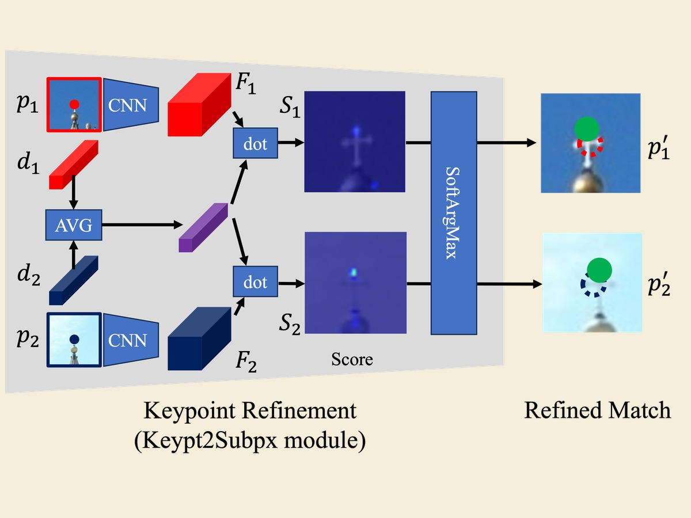

Shinjeong Kim, 김 신정
I am a PhD candidate in Computing at Imperial College London, under the supervision of Prof. Andrew J. Davison and Prof. Paul Kelly. I am interested in geometric computer vision (a.k.a 3D vision) and robot perception.
Previously
During my master's course, I participated in a research project on sub-pixel accurate keypoint refinement at Computer Vision and Geometry Group @ ETH Zurich (Advisor: Dr. Daniel Barath, PI: Prof. Marc Pollefeys). As an undergraduate researcher, I participated in research projects on Weakly-supervised Semantic Segmentation at Visual Intelligence Lab. @ KAIST (PI: Prof. Kuk-Jin Yoon). I also previously worked as an undergraduate researcher at Neuro-Machine Augmented Intelligence Laboratory @ KAIST (PI: Prof. Sungho Jo).
News
- [Jun. 2026] I am attending CVPR 2026 where I am organizing On-Sensor Vision Workshop!